Look back, don't react.
Sensor data reaches Apple Health several hours late. Diaviz makes no claim to real-time use: it is for understanding after the fact.
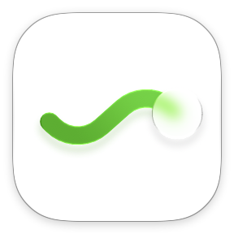
DiavizOne journal to look back on type 1 diabetes.
Glucose, meals, insulin, exercise and sleep in one place, reviewed after the fact to see quickly what happened.
This site presents the ideas behind the app and gathers feedback. Screenshots show the app in French.
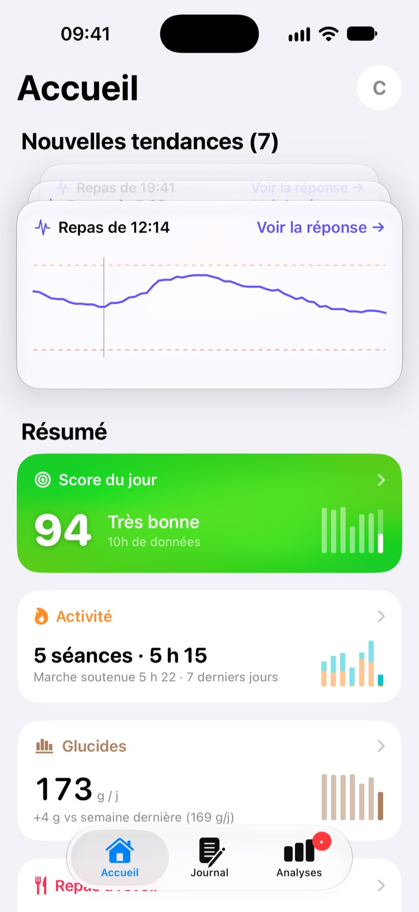
Why
Living with type 1 diabetes means juggling several sources. Each shows its own number, rarely the others'. Linking a meal to the curve that follows means switching from one app to another, and whatever wasn't written down at the time ends up forgotten.
What
Each event takes its place next to the others, with nothing to copy over. The app is designed for spending little time in it: a few taps to log, a glance to review.
How
Sensor data reaches Apple Health several hours late. Diaviz makes no claim to real-time use: it is for understanding after the fact.
Every analysis is descriptive statistics that can be recounted by hand. No opaque model, no prediction.
As long as there is not enough data, the app says so plainly instead of showing a result. A disrupted meal or night is set aside, with the reason.
Concepts
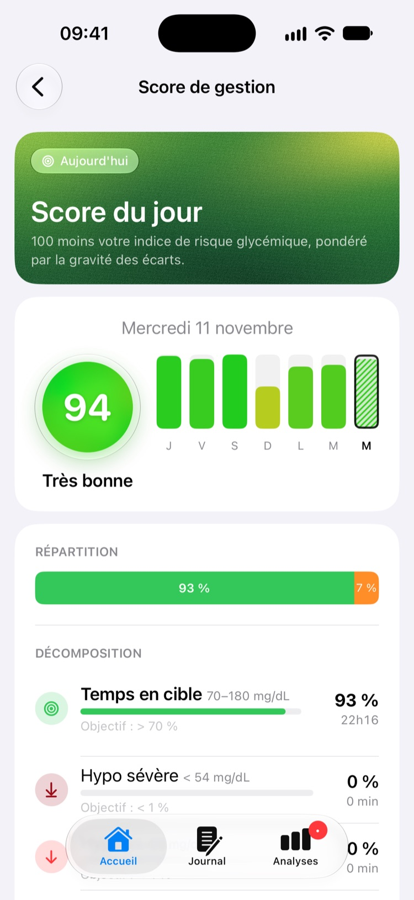
Sum up a day without rereading the whole curve.
The app gives a score out of 100, with its breakdown. It goes down with time spent in hypoglycemia or very high; hypoglycemia weighs more.
The score is derived from the Glycemia Risk Index (Klonoff et al., 2022), a published index that weights the time spent in each glucose range. It is a personal indicator, not a clinically validated measure.
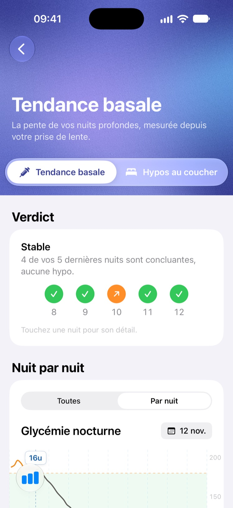
At night, nobody watches the curve.
The app shows glucose night after night. Each night is split into phases starting from the basal insulin time; only the calmest part is used to read a trend.
A phase is set aside when it is disrupted: carb treatment, correction, incomplete sensor data. The result is a finding ("stable", "downward trend observed"), never dosing advice. After a dose change, the app waits a few nights before saying anything.
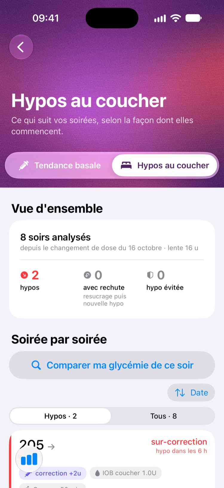
In the evening, every decision weighs on the night.
The app counts evenings as they happened: hypos while falling asleep, evening corrections, carb treatments followed by another drop. It can also compare tonight's glucose with past evenings that started the same way.
These are raw facts, always with the total number of evenings, with no verdict or advice. Counts start over after a basal dose change.
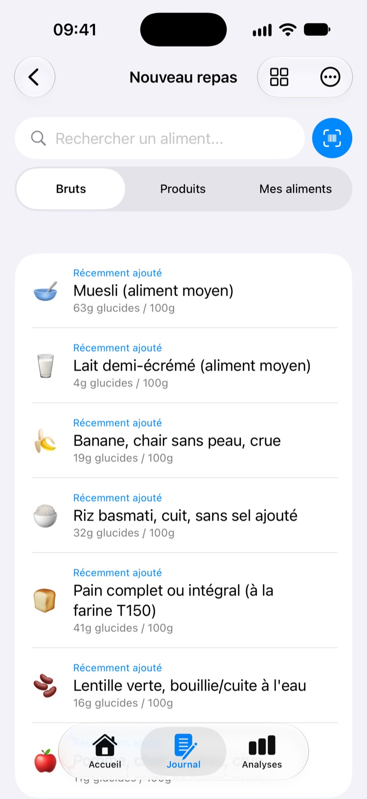
An analysis is only as good as what was logged.
You search for a basic food in the official composition table, or for a packaged product by name or barcode. Usual foods come back at the top, with last time's quantity.
Basic foods: the French Ciqual table (Anses). Packaged products: the collaborative Open Food Facts database, the app's only network connection, with no health data sent. A product whose carbs are missing is flagged as such.
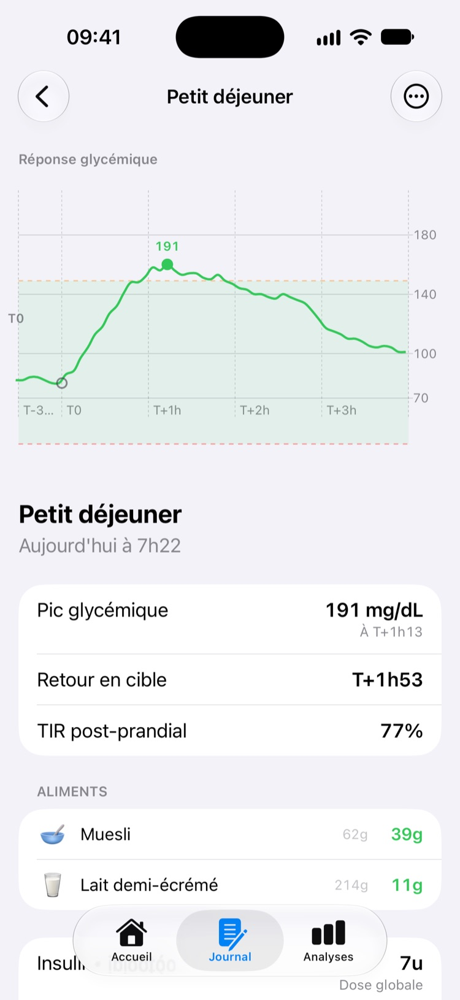
Know how a meal went without searching three apps.
Each meal has its curve, from the hour before to the four hours after. A meal mixed up with another event (another meal, a correction, exercise) is left out of comparisons, with the reason.
The peak, the return to range and the time in range are read on the actual sensor curve. A meal whose curve doesn't measure that meal alone is left out of every comparison.
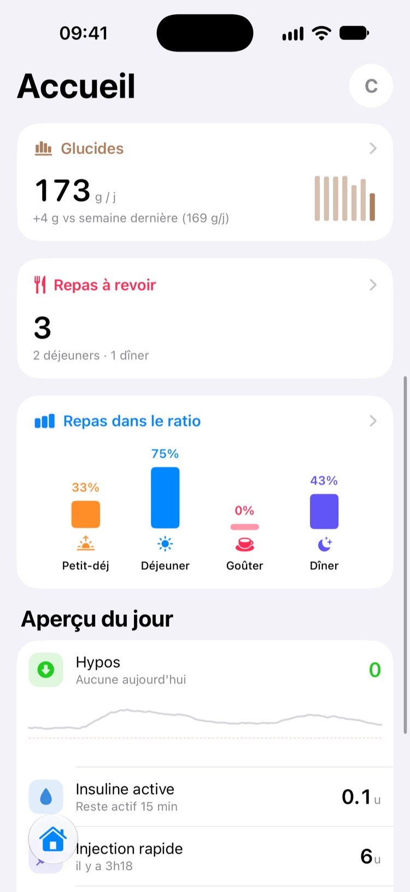
A ratio set once doesn't tell whether it holds every day.
The app compares the doses taken with the ratio the person set themselves, for each time of day, and shows how many meals ended in range.
It only reports a gap when there are enough comparable meals; otherwise it shows "not enough history". Meals deliberately adjusted (after exercise, for instance) are not mixed with the others. It never suggests a new ratio.
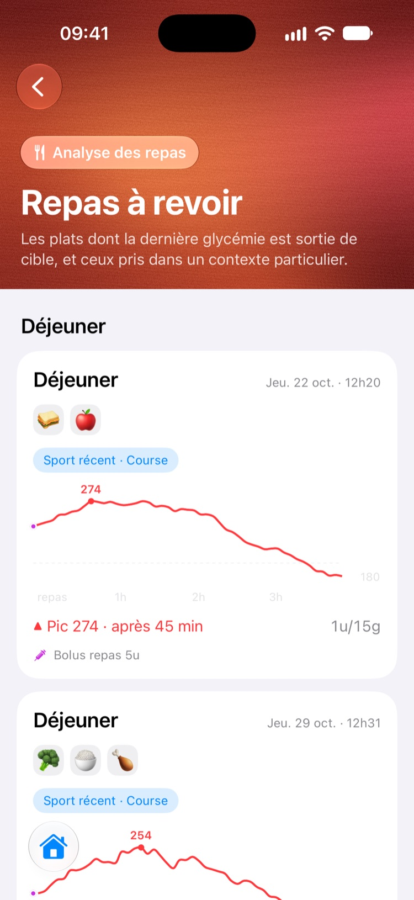
A dish that often ends out of range easily goes unnoticed.
The latest result of a recurring dish is shown next to its previous times. Two meals are "the same dish" only if they have the same composition: better to miss a duplicate than to invent one.
The card says how many times the dish went out of range, out of how many in total. It disappears on its own if the next time goes well.
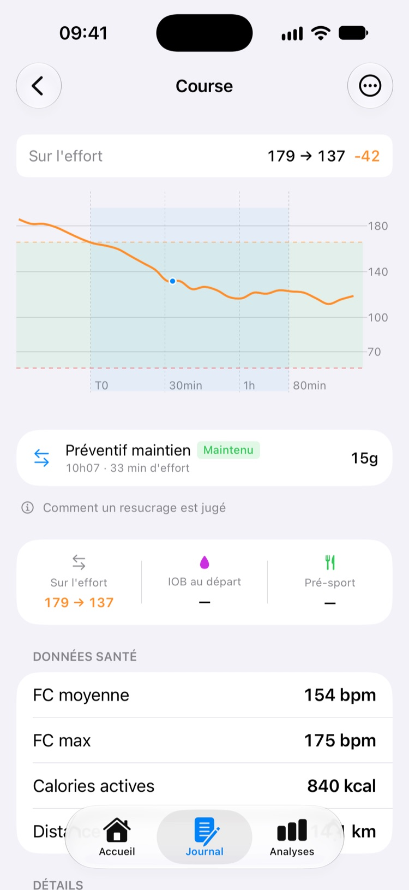
Effort moves glucose, during and after.
Each carb intake during exercise is logged with its intent: raise, maintain, prevent a drop. The app then shows what glucose did: rose, held, drop avoided, or went too high.
Sessions come from Apple Health or from a stopwatch built into the app. Comparison across sessions is not built yet: it is waiting for enough history.
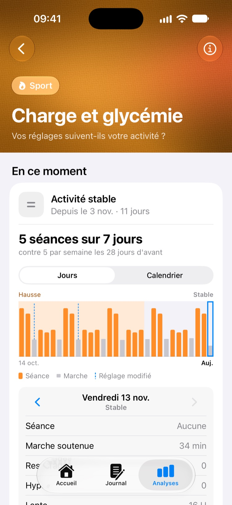
A busy week doesn't look like a quiet one.
The app estimates what remains active from sessions and walking, and compares it with the person's usual weeks. Each effort counts, then fades over time.
The settings in use (basal insulin, ratios) are set against each load period, each with its own count since its last change. The reference is personal, never a norm. The app describes; it doesn't say which setting to choose.
Also: an estimate of the insulin still active, based on a published model, and a library of sourced summaries of the literature, kept apart from any personal data.
Limits
It replaces neither the care team, nor the sensor's app, nor approved tools.
Status
Not distributed. No App Store, no public TestFlight, no download. Only the source code can be viewed.
Not a medical device. No clinical validation, no CE marking, no assessment by a health authority.
Descriptions, not guidance. Nothing presented here should guide a treatment. For any decision, refer to your care team and your approved tools. In an emergency, call your local emergency number (112 in Europe).
Feedback
This site is here to test these ideas against people who live with diabetes or support those who do. Does a concept seem right, debatable, poorly worded? Is something missing?
Discussions are public: do not post any personal health data. No request for medical help can be handled there.